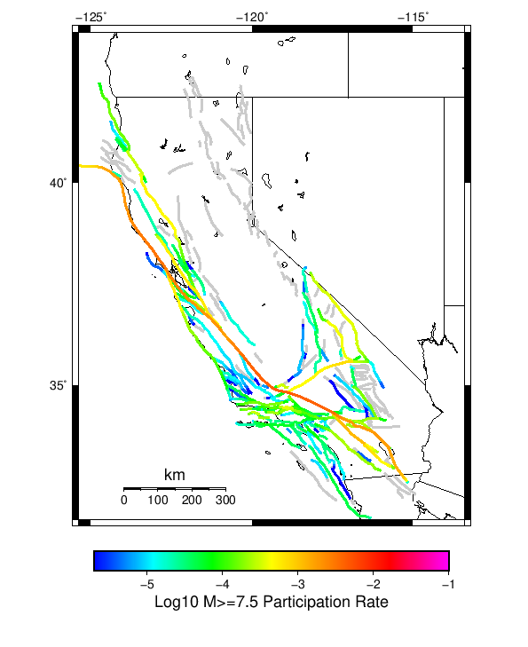

Start 2012, 500 yr, Spontaneous, Historical Catalog, AleatoryKTest Results
| Start 2012, 500 yr, Spontaneous, Historical Catalog, AleatoryKTest |
|---|
| Num Simulations | 861 (incomplete) |
| Start Time | 2012/01/01 00:00:00 UTC |
| Start Time Epoch Milliseconds | 1325376000000 |
| Duration | 500 Years |
| Includes Spontaneous? | true |
| Trigger Ruptures | (none) |
| Historical Ruptures | 60366 Trigger Ruptures |
| First: M7.3 at 1852/01/05 04:40:39 UTC |
| Last: M3.2 at 2011/12/31 19:14:44 UTC |
| Largest: M7.9 at 1857/01/09 16:25:39 UTC |
| Config Generated With | u3etas_config_builder.sh --start-year 2012 --num-simulations 1000 --duration-years 500 --include-spontaneous --historical-catalog --name-add AleatoryKTest --hpc-site USC_HPC --nodes 18 --hours 24 --queue scec |
Table Of Contents
Magnitude Frequency Distribution
(top)
Legend
- Mean (thick black line): mean annual rate across all 861 catalogs
- 2.5%,97.5% (thin black lines): annual rate percentiles across all 861 catalogs
- Median (thin blue line): median annual rate across all 861 catalogs
- Mode (thin cyan line): modal annual rate across all 861 catalogs (scaled to annualized value)
- 500 yr Probability (thin red line): 500 year probability calculated as the fraction of catalogs with at least 1 occurrence
- 500 yr Supraseismogenic Probability (thin dashed red line): same as above, but only for supraseismogenic ruptures on explicitly modeled UCERF3 faults
- 95% Conf (light red shaded region): binomial 95% confidence bounds on probability

| Mag | Mean | 2.5 %ile | 97.5 %ile | Median | Mode | 500 yr Probability | 500 yr Supra-Seis Prob |
|---|
| M≥5 | 7.814 | 6.742 | 9.336 | 7.742 | 7.742 | 1.000 (100.00%) | 1.000 (100.00%) |
| M≥5.1 | 6.180 | 5.330 | 7.428 | 6.118 | 5.674 | 1.000 (100.00%) | 1.000 (100.00%) |
| M≥5.2 | 4.884 | 4.198 | 5.878 | 4.842 | 4.880 | 1.000 (100.00%) | 1.000 (100.00%) |
| M≥5.3 | 3.855 | 3.308 | 4.598 | 3.826 | 3.668 | 1.000 (100.00%) | 1.000 (100.00%) |
| M≥5.4 | 3.033 | 2.606 | 3.626 | 3.010 | 3.212 | 1.000 (100.00%) | 1.000 (100.00%) |
| M≥5.5 | 2.383 | 2.036 | 2.842 | 2.362 | 2.456 | 1.000 (100.00%) | 1.000 (100.00%) |
| M≥5.6 | 1.866 | 1.594 | 2.234 | 1.850 | 1.782 | 1.000 (100.00%) | 1.000 (100.00%) |
| M≥5.7 | 1.454 | 1.238 | 1.722 | 1.446 | 1.424 | 1.000 (100.00%) | 1.000 (100.00%) |
| M≥5.8 | 1.126 | 0.958 | 1.336 | 1.120 | 1.084 | 1.000 (100.00%) | 1.000 (100.00%) |
| M≥5.9 | 0.856 | 0.734 | 1.006 | 0.854 | 0.870 | 1.000 (100.00%) | 1.000 (100.00%) |
| M≥6 | 0.676 | 0.580 | 0.786 | 0.674 | 0.674 | 1.000 (100.00%) | 1.000 (100.00%) |
| M≥6.1 | 0.520 | 0.444 | 0.614 | 0.518 | 0.500 | 1.000 (100.00%) | 1.000 (100.00%) |
| M≥6.2 | 0.410 | 0.344 | 0.482 | 0.408 | 0.410 | 1.000 (100.00%) | 1.000 (100.00%) |
| M≥6.3 | 0.322 | 0.268 | 0.378 | 0.320 | 0.318 | 1.000 (100.00%) | 1.000 (100.00%) |
| M≥6.4 | 0.252 | 0.206 | 0.302 | 0.252 | 0.248 | 1.000 (100.00%) | 1.000 (100.00%) |
| M≥6.5 | 0.194 | 0.156 | 0.236 | 0.194 | 0.194 | 1.000 (100.00%) | 1.000 (100.00%) |
| M≥6.6 | 0.151 | 0.118 | 0.184 | 0.152 | 0.154 | 1.000 (100.00%) | 1.000 (100.00%) |
| M≥6.7 | 0.117 | 0.092 | 0.146 | 0.116 | 0.118 | 1.000 (100.00%) | 1.000 (100.00%) |
| M≥6.8 | 0.092 | 0.068 | 0.116 | 0.092 | 0.086 | 1.000 (100.00%) | 1.000 (100.00%) |
| M≥6.9 | 0.072 | 0.052 | 0.094 | 0.072 | 0.076 | 1.000 (100.00%) | 1.000 (100.00%) |
| M≥7 | 0.057 | 0.040 | 0.074 | 0.056 | 0.058 | 1.000 (100.00%) | 1.000 (100.00%) |
| M≥7.1 | 0.043 | 0.030 | 0.058 | 0.044 | 0.040 | 1.000 (100.00%) | 1.000 (100.00%) |
| M≥7.2 | 0.033 | 0.022 | 0.044 | 0.032 | 0.030 | 1.000 (100.00%) | 1.000 (100.00%) |
| M≥7.3 | 0.026 | 0.016 | 0.038 | 0.026 | 0.026 | 1.000 (100.00%) | 1.000 (100.00%) |
| M≥7.4 | 0.020 | 0.012 | 0.030 | 0.020 | 0.020 | 1.000 (100.00%) | 1.000 (100.00%) |
| M≥7.5 | 0.015 | 8.00E-3 | 0.022 | 0.014 | 0.014 | 1.000 (100.00%) | 1.000 (100.00%) |
| M≥7.6 | 0.011 | 6.00E-3 | 0.018 | 0.010 | 0.010 | 1.000 (100.00%) | 1.000 (100.00%) |
| M≥7.7 | 7.83E-3 | 4.00E-3 | 0.012 | 8.00E-3 | 8.00E-3 | 1.000 (100.00%) | 1.000 (100.00%) |
| M≥7.8 | 5.42E-3 | 2.00E-3 | 0.010 | 6.00E-3 | 6.00E-3 | 0.997 (99.65%) | 0.997 (99.65%) |
| M≥7.9 | 3.04E-3 | 0.000 | 6.00E-3 | 2.00E-3 | 2.00E-3 | 0.899 (89.90%) | 0.899 (89.90%) |
| M≥8 | 1.70E-3 | 0.000 | 4.00E-3 | 2.00E-3 | 2.00E-3 | 0.647 (64.69%) | 0.647 (64.69%) |
| M≥8.1 | 8.36E-4 | 0.000 | 4.00E-3 | 0.000 | 0.000 | 0.367 (36.70%) | 0.367 (36.70%) |
| M≥8.2 | 3.95E-4 | 0.000 | 2.00E-3 | 0.000 | 0.000 | 0.190 (19.05%) | 0.190 (19.05%) |
| M≥8.3 | 6.74E-5 | 0.000 | 2.00E-3 | 0.000 | 0.000 | 0.034 (3.37%) | 0.034 (3.37%) |
| M≥8.4 | 0.000 | 0.000 | 0.000 | 0.000 | 0.000 | 0.000 (0.00%) | 0.000 (0.00%) |
| M≥8.5 | 0.000 | 0.000 | 0.000 | 0.000 | 0.000 | 0.000 (0.00%) | 0.000 (0.00%) |
| M≥8.6 | 0.000 | 0.000 | 0.000 | 0.000 | 0.000 | 0.000 (0.00%) | 0.000 (0.00%) |
| M≥8.7 | 0.000 | 0.000 | 0.000 | 0.000 | 0.000 | 0.000 (0.00%) | 0.000 (0.00%) |
| M≥8.8 | 0.000 | 0.000 | 0.000 | 0.000 | 0.000 | 0.000 (0.00%) | 0.000 (0.00%) |
| M≥8.9 | 0.000 | 0.000 | 0.000 | 0.000 | 0.000 | 0.000 (0.00%) | 0.000 (0.00%) |
| M≥9 | 0.000 | 0.000 | 0.000 | 0.000 | 0.000 | 0.000 (0.00%) | 0.000 (0.00%) |
Long Term Rate Variability
(top)
162 Year Variability
(top)

Download CSV Here
| Magnitude | Mean | Median | Mode | Std. Dev. | 2.5 %-ile | 16 %-ile | 84 %-ile | 97.5 %-ile |
|---|
| 5.0 | 7.8099804 | 7.623457 | 7.740741 | 1.1968963 | 6.123457 | 6.7901235 | 8.753086 | 10.462963 |
| 5.1 | 6.176496 | 6.037037 | 5.5 | 0.9481268 | 4.8333335 | 5.3641977 | 6.932099 | 8.253086 |
| 5.2 | 4.881715 | 4.7777777 | 4.839506 | 0.7478869 | 3.8148148 | 4.234568 | 5.487654 | 6.567901 |
| 5.3 | 3.853496 | 3.7777777 | 3.6604939 | 0.58738387 | 2.993827 | 3.345679 | 4.3333335 | 5.1358023 |
| 5.4 | 3.0324056 | 2.9753087 | 2.9135802 | 0.46206978 | 2.3395061 | 2.6358025 | 3.4012346 | 4.0308642 |
| 5.5 | 2.3824077 | 2.3333333 | 2.228395 | 0.36252338 | 1.8333334 | 2.0617285 | 2.6666667 | 3.1728394 |
| 5.6 | 1.8657031 | 1.8333334 | 1.7407408 | 0.2817945 | 1.4320987 | 1.6172839 | 2.0987654 | 2.4876542 |
| 5.7 | 1.4535018 | 1.4320987 | 1.3827161 | 0.21635589 | 1.1172839 | 1.2530864 | 1.6358025 | 1.9074074 |
| 5.8 | 1.1260736 | 1.1111112 | 1.0432099 | 0.16519094 | 0.8580247 | 0.9691358 | 1.2654321 | 1.4753087 |
| 5.9 | 0.8556277 | 0.845679 | 0.83950615 | 0.1254149 | 0.6481481 | 0.7407407 | 0.962963 | 1.1296296 |
| 6.0 | 0.6758291 | 0.6666667 | 0.6234568 | 0.098679714 | 0.50617284 | 0.5802469 | 0.7654321 | 0.88271606 |
| 6.1 | 0.519613 | 0.5185185 | 0.54320985 | 0.07841652 | 0.37654322 | 0.44444445 | 0.5925926 | 0.6851852 |
| 6.2 | 0.40951043 | 0.4074074 | 0.41975307 | 0.06367671 | 0.2962963 | 0.35185185 | 0.4691358 | 0.537037 |
| 6.3 | 0.32196507 | 0.32098764 | 0.3271605 | 0.052488644 | 0.22839506 | 0.27160493 | 0.37654322 | 0.42592594 |
| 6.4 | 0.25175768 | 0.25308642 | 0.25308642 | 0.04426602 | 0.17283951 | 0.20987654 | 0.2962963 | 0.33950618 |
| 6.5 | 0.19429986 | 0.19135803 | 0.19135803 | 0.03725759 | 0.12962963 | 0.15432099 | 0.22839506 | 0.27160493 |
| 6.6 | 0.15127878 | 0.14814815 | 0.15432099 | 0.03167817 | 0.09259259 | 0.11728395 | 0.18518518 | 0.21604939 |
| 6.7 | 0.11699478 | 0.11728395 | 0.11111111 | 0.027083723 | 0.06790123 | 0.09259259 | 0.14197531 | 0.17283951 |
| 6.8 | 0.09225802 | 0.09259259 | 0.086419754 | 0.023552328 | 0.049382716 | 0.06790123 | 0.11728395 | 0.14197531 |
| 6.9 | 0.072195694 | 0.074074075 | 0.06790123 | 0.019985244 | 0.037037037 | 0.049382716 | 0.09259259 | 0.11111111 |
| 7.0 | 0.056633353 | 0.055555556 | 0.055555556 | 0.017290512 | 0.024691358 | 0.037037037 | 0.074074075 | 0.09259259 |
| 7.1 | 0.04330308 | 0.043209877 | 0.043209877 | 0.014926999 | 0.018518519 | 0.030864198 | 0.055555556 | 0.074074075 |
| 7.2 | 0.0329481 | 0.030864198 | 0.030864198 | 0.012589293 | 0.012345679 | 0.018518519 | 0.043209877 | 0.061728396 |
| 7.3 | 0.026139574 | 0.024691358 | 0.024691358 | 0.010849125 | 0.0061728396 | 0.018518519 | 0.037037037 | 0.049382716 |
| 7.4 | 0.02024873 | 0.018518519 | 0.018518519 | 0.009374545 | 0.0061728396 | 0.012345679 | 0.030864198 | 0.037037037 |
| 7.5 | 0.014733084 | 0.012345679 | 0.012345679 | 0.007977703 | 0.0 | 0.0061728396 | 0.024691358 | 0.030864198 |
| 7.6 | 0.011079088 | 0.012345679 | 0.012345679 | 0.006639612 | 0.0 | 0.0061728396 | 0.018518519 | 0.024691358 |
| 7.7 | 0.007845696 | 0.0061728396 | 0.0061728396 | 0.00541686 | 0.0 | 0.0 | 0.012345679 | 0.018518519 |
| 7.8 | 0.005424834 | 0.0061728396 | 0.0061728396 | 0.004458638 | 0.0 | 0.0 | 0.012345679 | 0.012345679 |
| 7.9 | 0.0030422085 | 0.0 | 0.0 | 0.003477863 | 0.0 | 0.0 | 0.0061728396 | 0.012345679 |
| 8.0 | 0.0017063133 | 0.0 | 0.0 | 0.0028246108 | 0.0 | 0.0 | 0.0061728396 | 0.0061728396 |
| 8.1 | 8.3642814E-4 | 0.0 | 0.0 | 0.0021339632 | 0.0 | 0.0 | 0.0 | 0.0061728396 |
| 8.2 | 3.8714672E-4 | 0.0 | 0.0 | 0.0014969234 | 0.0 | 0.0 | 0.0 | 0.0061728396 |
| 8.3 | 6.691425E-5 | 0.0 | 0.0 | 6.393212E-4 | 0.0 | 0.0 | 0.0 | 0.0 |
| 8.4 | 0.0 | 0.0 | 0.0 | 0.0 | 0.0 | 0.0 | 0.0 | 0.0 |
| 8.5 | 0.0 | 0.0 | 0.0 | 0.0 | 0.0 | 0.0 | 0.0 | 0.0 |
| 8.6 | 0.0 | 0.0 | 0.0 | 0.0 | 0.0 | 0.0 | 0.0 | 0.0 |
| 8.7 | 0.0 | 0.0 | 0.0 | 0.0 | 0.0 | 0.0 | 0.0 | 0.0 |
| 8.8 | 0.0 | 0.0 | 0.0 | 0.0 | 0.0 | 0.0 | 0.0 | 0.0 |
| 8.9 | 0.0 | 0.0 | 0.0 | 0.0 | 0.0 | 0.0 | 0.0 | 0.0 |
| 9.0 | 0.0 | 0.0 | 0.0 | 0.0 | 0.0 | 0.0 | 0.0 | 0.0 |
80 Year Variability
(top)

Download CSV Here
| Magnitude | Mean | Median | Mode | Std. Dev. | 2.5 %-ile | 16 %-ile | 84 %-ile | 97.5 %-ile |
|---|
| 5.0 | 7.814085 | 7.4875 | 6.8 | 1.690742 | 5.6625 | 6.45 | 9.0875 | 11.8875 |
| 5.1 | 6.179769 | 5.925 | 5.5 | 1.3394858 | 4.475 | 5.0875 | 7.1875 | 9.35 |
| 5.2 | 4.884342 | 4.7 | 4.15 | 1.0553643 | 3.5125 | 4.025 | 5.7 | 7.4 |
| 5.3 | 3.8555386 | 3.7125 | 3.525 | 0.8312808 | 2.7375 | 3.175 | 4.5 | 5.825 |
| 5.4 | 3.0341222 | 2.925 | 2.8375 | 0.65264606 | 2.1375 | 2.5 | 3.5375 | 4.55 |
| 5.5 | 2.3836963 | 2.3 | 2.2125 | 0.5110117 | 1.675 | 1.95 | 2.7875 | 3.5875 |
| 5.6 | 1.8665748 | 1.8125 | 1.725 | 0.3969936 | 1.3 | 1.525 | 2.1875 | 2.8 |
| 5.7 | 1.4540771 | 1.4125 | 1.3875 | 0.306637 | 1.0 | 1.1875 | 1.7125 | 2.1625 |
| 5.8 | 1.1263139 | 1.1 | 1.1125 | 0.23513013 | 0.7625 | 0.9125 | 1.325 | 1.65 |
| 5.9 | 0.855979 | 0.8375 | 0.8375 | 0.17766085 | 0.575 | 0.7 | 1.0125 | 1.25 |
| 6.0 | 0.6760211 | 0.6625 | 0.65 | 0.14035608 | 0.4375 | 0.55 | 0.8 | 0.975 |
| 6.1 | 0.5197832 | 0.5125 | 0.5125 | 0.11200996 | 0.325 | 0.4125 | 0.625 | 0.75 |
| 6.2 | 0.4096714 | 0.4 | 0.375 | 0.091560714 | 0.25 | 0.325 | 0.5 | 0.6 |
| 6.3 | 0.32215932 | 0.3125 | 0.3 | 0.075838566 | 0.1875 | 0.25 | 0.4 | 0.4875 |
| 6.4 | 0.25196236 | 0.25 | 0.2375 | 0.064284 | 0.1375 | 0.1875 | 0.3125 | 0.3875 |
| 6.5 | 0.19443476 | 0.1875 | 0.1875 | 0.05419536 | 0.1 | 0.1375 | 0.25 | 0.3125 |
| 6.6 | 0.15137921 | 0.15 | 0.1375 | 0.04642049 | 0.0625 | 0.1 | 0.2 | 0.25 |
| 6.7 | 0.117065914 | 0.1125 | 0.1 | 0.039739035 | 0.05 | 0.075 | 0.1625 | 0.2 |
| 6.8 | 0.09230304 | 0.0875 | 0.075 | 0.03440929 | 0.0375 | 0.0625 | 0.125 | 0.1625 |
| 6.9 | 0.07221738 | 0.075 | 0.0625 | 0.029611064 | 0.025 | 0.0375 | 0.1 | 0.1375 |
| 7.0 | 0.05667344 | 0.05 | 0.05 | 0.025782509 | 0.0125 | 0.0375 | 0.0875 | 0.1125 |
| 7.1 | 0.043328978 | 0.0375 | 0.0375 | 0.022413136 | 0.0125 | 0.025 | 0.0625 | 0.0875 |
| 7.2 | 0.032975223 | 0.0375 | 0.025 | 0.019098364 | 0.0 | 0.0125 | 0.05 | 0.075 |
| 7.3 | 0.026175959 | 0.025 | 0.025 | 0.016778877 | 0.0 | 0.0125 | 0.0375 | 0.0625 |
| 7.4 | 0.02026955 | 0.0125 | 0.0125 | 0.014555322 | 0.0 | 0.0 | 0.0375 | 0.05 |
| 7.5 | 0.01475271 | 0.0125 | 0.0125 | 0.012442047 | 0.0 | 0.0 | 0.025 | 0.0375 |
| 7.6 | 0.011099013 | 0.0125 | 0.0125 | 0.010528315 | 0.0 | 0.0 | 0.025 | 0.0375 |
| 7.7 | 0.007878436 | 0.0125 | 0.0 | 0.0087689515 | 0.0 | 0.0 | 0.0125 | 0.025 |
| 7.8 | 0.005444251 | 0.0 | 0.0 | 0.0072427546 | 0.0 | 0.0 | 0.0125 | 0.025 |
| 7.9 | 0.0030608787 | 0.0 | 0.0 | 0.0055799843 | 0.0 | 0.0 | 0.0125 | 0.0125 |
| 8.0 | 0.0017179636 | 0.0 | 0.0 | 0.004332291 | 0.0 | 0.0 | 0.0 | 0.0125 |
| 8.1 | 8.444638E-4 | 0.0 | 0.0 | 0.003137608 | 0.0 | 0.0 | 0.0 | 0.0125 |
| 8.2 | 3.8956638E-4 | 0.0 | 0.0 | 0.002172264 | 0.0 | 0.0 | 0.0 | 0.0125 |
| 8.3 | 6.7750676E-5 | 0.0 | 0.0 | 9.1785425E-4 | 0.0 | 0.0 | 0.0 | 0.0 |
| 8.4 | 0.0 | 0.0 | 0.0 | 0.0 | 0.0 | 0.0 | 0.0 | 0.0 |
| 8.5 | 0.0 | 0.0 | 0.0 | 0.0 | 0.0 | 0.0 | 0.0 | 0.0 |
| 8.6 | 0.0 | 0.0 | 0.0 | 0.0 | 0.0 | 0.0 | 0.0 | 0.0 |
| 8.7 | 0.0 | 0.0 | 0.0 | 0.0 | 0.0 | 0.0 | 0.0 | 0.0 |
| 8.8 | 0.0 | 0.0 | 0.0 | 0.0 | 0.0 | 0.0 | 0.0 | 0.0 |
| 8.9 | 0.0 | 0.0 | 0.0 | 0.0 | 0.0 | 0.0 | 0.0 | 0.0 |
| 9.0 | 0.0 | 0.0 | 0.0 | 0.0 | 0.0 | 0.0 | 0.0 | 0.0 |
28 Year Variability
(top)

Download CSV Here
| Magnitude | Mean | Median | Mode | Std. Dev. | 2.5 %-ile | 16 %-ile | 84 %-ile | 97.5 %-ile |
|---|
| 5.0 | 7.8152113 | 7.178571 | 6.821429 | 2.776302 | 4.928571 | 5.857143 | 9.571428 | 14.571428 |
| 5.1 | 6.180826 | 5.678571 | 4.964286 | 2.1980398 | 3.857143 | 4.607143 | 7.571429 | 11.5 |
| 5.2 | 4.8850102 | 4.5 | 4.142857 | 1.7326437 | 3.0 | 3.642857 | 6.0 | 9.107142 |
| 5.3 | 3.856035 | 3.5714285 | 3.1785715 | 1.3652365 | 2.3214285 | 2.857143 | 4.75 | 7.142857 |
| 5.4 | 3.034404 | 2.8214285 | 2.642857 | 1.0747559 | 1.7857143 | 2.2142856 | 3.75 | 5.607143 |
| 5.5 | 2.3839755 | 2.2142856 | 1.9642857 | 0.8433721 | 1.3571428 | 1.7142857 | 2.9642856 | 4.392857 |
| 5.6 | 1.866759 | 1.75 | 1.5714285 | 0.6571743 | 1.0357143 | 1.3571428 | 2.357143 | 3.4285715 |
| 5.7 | 1.4542964 | 1.3571428 | 1.2857143 | 0.5091208 | 0.78571427 | 1.0357143 | 1.8214285 | 2.642857 |
| 5.8 | 1.1264188 | 1.0714285 | 0.96428573 | 0.39155418 | 0.5714286 | 0.78571427 | 1.4285715 | 2.0357144 |
| 5.9 | 0.8561181 | 0.8214286 | 0.75 | 0.29966745 | 0.42857143 | 0.60714287 | 1.1071428 | 1.5357143 |
| 6.0 | 0.676151 | 0.64285713 | 0.64285713 | 0.23813547 | 0.32142857 | 0.4642857 | 0.89285713 | 1.2142857 |
| 6.1 | 0.51996654 | 0.5 | 0.42857143 | 0.19104983 | 0.21428572 | 0.35714287 | 0.6785714 | 0.9285714 |
| 6.2 | 0.40985662 | 0.39285713 | 0.39285713 | 0.15750842 | 0.14285715 | 0.25 | 0.5714286 | 0.75 |
| 6.3 | 0.32227525 | 0.32142857 | 0.25 | 0.13230893 | 0.10714286 | 0.17857143 | 0.4642857 | 0.60714287 |
| 6.4 | 0.25203985 | 0.25 | 0.21428572 | 0.11274242 | 0.071428575 | 0.14285715 | 0.35714287 | 0.5 |
| 6.5 | 0.19451927 | 0.17857143 | 0.14285715 | 0.09566229 | 0.035714287 | 0.10714286 | 0.2857143 | 0.39285713 |
| 6.6 | 0.15148498 | 0.14285715 | 0.14285715 | 0.081818275 | 0.035714287 | 0.071428575 | 0.21428572 | 0.32142857 |
| 6.7 | 0.11712246 | 0.10714286 | 0.10714286 | 0.07025319 | 0.0 | 0.035714287 | 0.17857143 | 0.2857143 |
| 6.8 | 0.09237597 | 0.071428575 | 0.071428575 | 0.061094638 | 0.0 | 0.035714287 | 0.14285715 | 0.25 |
| 6.9 | 0.072277695 | 0.071428575 | 0.035714287 | 0.052923903 | 0.0 | 0.035714287 | 0.10714286 | 0.17857143 |
| 7.0 | 0.05673001 | 0.035714287 | 0.035714287 | 0.04626114 | 0.0 | 0.0 | 0.10714286 | 0.17857143 |
| 7.1 | 0.043380767 | 0.035714287 | 0.035714287 | 0.04006763 | 0.0 | 0.0 | 0.071428575 | 0.14285715 |
| 7.2 | 0.033015646 | 0.035714287 | 0.0 | 0.034551438 | 0.0 | 0.0 | 0.071428575 | 0.10714286 |
| 7.3 | 0.026200725 | 0.035714287 | 0.0 | 0.03046872 | 0.0 | 0.0 | 0.071428575 | 0.10714286 |
| 7.4 | 0.020295924 | 0.0 | 0.0 | 0.026795877 | 0.0 | 0.0 | 0.035714287 | 0.071428575 |
| 7.5 | 0.014759562 | 0.0 | 0.0 | 0.022788864 | 0.0 | 0.0 | 0.035714287 | 0.071428575 |
| 7.6 | 0.011097122 | 0.0 | 0.0 | 0.019517025 | 0.0 | 0.0 | 0.035714287 | 0.071428575 |
| 7.7 | 0.007871442 | 0.0 | 0.0 | 0.01627939 | 0.0 | 0.0 | 0.035714287 | 0.035714287 |
| 7.8 | 0.005438761 | 0.0 | 0.0 | 0.013494531 | 0.0 | 0.0 | 0.0 | 0.035714287 |
| 7.9 | 0.0030622005 | 0.0 | 0.0 | 0.010129587 | 0.0 | 0.0 | 0.0 | 0.035714287 |
| 8.0 | 0.0017128803 | 0.0 | 0.0 | 0.0076317964 | 0.0 | 0.0 | 0.0 | 0.035714287 |
| 8.1 | 8.4424013E-4 | 0.0 | 0.0 | 0.0054259286 | 0.0 | 0.0 | 0.0 | 0.0 |
| 8.2 | 3.9040006E-4 | 0.0 | 0.0 | 0.003713676 | 0.0 | 0.0 | 0.0 | 0.0 |
| 8.3 | 6.832001E-5 | 0.0 | 0.0 | 0.0015606086 | 0.0 | 0.0 | 0.0 | 0.0 |
| 8.4 | 0.0 | 0.0 | 0.0 | 0.0 | 0.0 | 0.0 | 0.0 | 0.0 |
| 8.5 | 0.0 | 0.0 | 0.0 | 0.0 | 0.0 | 0.0 | 0.0 | 0.0 |
| 8.6 | 0.0 | 0.0 | 0.0 | 0.0 | 0.0 | 0.0 | 0.0 | 0.0 |
| 8.7 | 0.0 | 0.0 | 0.0 | 0.0 | 0.0 | 0.0 | 0.0 | 0.0 |
| 8.8 | 0.0 | 0.0 | 0.0 | 0.0 | 0.0 | 0.0 | 0.0 | 0.0 |
| 8.9 | 0.0 | 0.0 | 0.0 | 0.0 | 0.0 | 0.0 | 0.0 | 0.0 |
| 9.0 | 0.0 | 0.0 | 0.0 | 0.0 | 0.0 | 0.0 | 0.0 | 0.0 |
Variability Duration Dependence
(top)

Download CSV Here
| Duration (years) | Mean | Median | Mode | Std. Dev. | 2.5 %-ile | 16 %-ile | 84 %-ile | 97.5 %-ile |
|---|
| 1.0 | 7.8142023 | 6.0 | 5.0 | 11.401709 | 1.0 | 3.0 | 11.0 | 25.0 |
| 4.0 | 7.8142023 | 6.5 | 5.5 | 6.4852996 | 3.0 | 4.5 | 10.0 | 20.75 |
| 8.0 | 7.8140197 | 6.75 | 5.75 | 4.824326 | 3.875 | 5.0 | 9.875 | 18.75 |
| 12.0 | 7.8115044 | 6.9166665 | 6.6666665 | 4.063057 | 4.25 | 5.3333335 | 9.75 | 17.416666 |
| 16.0 | 7.8140197 | 7.0 | 6.0625 | 3.6116607 | 4.5 | 5.5 | 9.6875 | 16.25 |
| 20.0 | 7.8142023 | 7.05 | 6.8 | 3.292627 | 4.65 | 5.65 | 9.65 | 15.5 |
| 24.0 | 7.814085 | 7.125 | 6.4166665 | 2.968459 | 4.7916665 | 5.75 | 9.625 | 14.958333 |
| 28.0 | 7.8152113 | 7.178571 | 6.821429 | 2.776302 | 4.928571 | 5.857143 | 9.571428 | 14.571428 |
| 32.0 | 7.814085 | 7.21875 | 6.625 | 2.5998824 | 5.03125 | 5.9375 | 9.53125 | 14.15625 |
| 36.0 | 7.816346 | 7.25 | 6.7777777 | 2.4664469 | 5.138889 | 6.0 | 9.5 | 13.694445 |
| 40.0 | 7.814085 | 7.275 | 6.575 | 2.3731332 | 5.225 | 6.05 | 9.425 | 13.625 |
| 44.0 | 7.8109493 | 7.318182 | 6.9545455 | 2.2650142 | 5.2727275 | 6.1136365 | 9.386364 | 13.318182 |
| 48.0 | 7.814085 | 7.3333335 | 6.875 | 2.2100403 | 5.3333335 | 6.1458335 | 9.333333 | 13.208333 |
| 52.0 | 7.816346 | 7.3846154 | 7.230769 | 2.115674 | 5.4038463 | 6.1923075 | 9.307693 | 12.769231 |
| 56.0 | 7.8234353 | 7.375 | 6.642857 | 2.0327606 | 5.464286 | 6.25 | 9.303572 | 12.714286 |
| 60.0 | 7.814085 | 7.4 | 6.8 | 1.9803895 | 5.4666667 | 6.2833333 | 9.25 | 12.483334 |
| 64.0 | 7.8234353 | 7.4375 | 6.4375 | 1.8931962 | 5.53125 | 6.34375 | 9.1875 | 12.3125 |
| 68.0 | 7.8152113 | 7.4264708 | 7.1617646 | 1.8669908 | 5.5588236 | 6.352941 | 9.132353 | 12.191176 |
| 72.0 | 7.8273892 | 7.4722223 | 6.611111 | 1.833696 | 5.611111 | 6.375 | 9.111111 | 12.277778 |
| 76.0 | 7.822656 | 7.4736843 | 6.8289475 | 1.7720227 | 5.644737 | 6.4210525 | 9.105263 | 12.0 |
| 80.0 | 7.814085 | 7.4875 | 6.8 | 1.690742 | 5.6625 | 6.45 | 9.0875 | 11.8875 |
| 84.0 | 7.8361845 | 7.5 | 7.0119047 | 1.6766796 | 5.714286 | 6.464286 | 9.130953 | 11.857142 |
| 88.0 | 7.824068 | 7.5113635 | 6.7954545 | 1.6381216 | 5.715909 | 6.4886365 | 9.079545 | 11.625 |
| 92.0 | 7.819616 | 7.521739 | 7.4347825 | 1.5854484 | 5.75 | 6.5326085 | 9.065217 | 11.695652 |
| 96.0 | 7.814085 | 7.5208335 | 6.9895835 | 1.5731986 | 5.8020835 | 6.5416665 | 9.020833 | 11.572917 |
| 100.0 | 7.8142023 | 7.52 | 7.54 | 1.5697696 | 5.81 | 6.54 | 8.98 | 11.51 |
| 200.0 | 7.8513093 | 7.68 | 6.97 | 1.1110263 | 6.335 | 6.875 | 8.775 | 10.34 |
| 300.0 | 7.879346 | 7.7433333 | 7.28 | 0.96764797 | 6.5333333 | 7.0333333 | 8.65 | 10.163333 |
| 400.0 | 7.8513093 | 7.7625 | 7.8775 | 0.79698133 | 6.65 | 7.125 | 8.495 | 9.6575 |
| 500.0 | 7.8142023 | 7.742 | 7.742 | 0.7096135 | 6.742 | 7.188 | 8.418 | 9.336 |
Simulation Stationarity
(top)

Section Participation
(top)
Section Participation Plots
(top)
| Min Mag | Complete Catalog (including spontaneous) |
|---|
| All Supra. Seis. |  |
| M≥6.5 |  |
| M≥7 |  |
| M≥7.5 |  |
| M≥8 |  |
Supra-Seismogenic Parent Sections Table
(top)
First 10 of 313 with matching ruptures shown
| Parent Name | Total Mean Annual Rate | Total 500 Year Prob |
|---|
| San Andreas (Parkfield) | 0.04236469 | 1.0 |
| San Andreas (Creeping Section) 2011 CFM | 0.028311266 | 1.0 |
| San Andreas (Mojave S) | 0.018675959 | 1.0 |
| Mendocino | 0.017811846 | 1.0 |
| Cerro Prieto | 0.013268293 | 1.0 |
| Imperial | 0.011626016 | 1.0 |
| Brawley (Seismic Zone) alt 1 | 0.011005807 | 1.0 |
| Hayward (So) 2011 CFM | 0.009370499 | 0.99883854 |
| San Andreas (Offshore) 2011 CFM | 0.0084901275 | 1.0 |
| Elsinore (Glen Ivy) rev | 0.008039489 | 0.9907085 |
M≥6.5 Parent Sections Table
(top)
First 10 of 306 with matching ruptures shown
| Parent Name | Total Mean Annual Rate | Total 500 Year Prob |
|---|
| Cerro Prieto | 0.011356562 | 1.0 |
| San Andreas (Creeping Section) 2011 CFM | 0.010836237 | 1.0 |
| Mendocino | 0.009133565 | 0.99883854 |
| Imperial | 0.008148665 | 0.99883854 |
| Hayward (So) 2011 CFM | 0.008039489 | 0.99767715 |
| Brawley (Seismic Zone) alt 1 | 0.007828107 | 0.99883854 |
| San Andreas (Mojave S) | 0.007015099 | 1.0 |
| San Andreas (Santa Cruz Mts) 2011 CFM | 0.0067851334 | 0.9965157 |
| San Andreas (San Bernardino N) | 0.006715447 | 1.0 |
| San Andreas (Offshore) 2011 CFM | 0.006174216 | 1.0 |
M≥7 Parent Sections Table
(top)
First 10 of 271 with matching ruptures shown
| Parent Name | Total Mean Annual Rate | Total 500 Year Prob |
|---|
| San Andreas (Creeping Section) 2011 CFM | 0.0067270617 | 0.9930314 |
| San Andreas (Carrizo) rev | 0.0057746805 | 1.0 |
| San Andreas (Cholame) rev | 0.0057166084 | 1.0 |
| San Andreas (Mojave S) | 0.0053170733 | 0.99883854 |
| San Andreas (Santa Cruz Mts) 2011 CFM | 0.0052682925 | 0.9918699 |
| San Andreas (Mojave N) | 0.004970964 | 1.0 |
| San Andreas (San Bernardino N) | 0.0046922183 | 0.98490125 |
| San Andreas (North Coast) 2011 CFM | 0.004643438 | 0.9965157 |
| San Andreas (Big Bend) | 0.004617886 | 0.99767715 |
| San Andreas (Offshore) 2011 CFM | 0.00442741 | 0.99535424 |
M≥7.5 Parent Sections Table
(top)
First 10 of 215 with matching ruptures shown
| Parent Name | Total Mean Annual Rate | Total 500 Year Prob |
|---|
| San Andreas (Mojave N) | 0.0048594656 | 0.99883854 |
| San Andreas (Big Bend) | 0.0044924505 | 0.9965157 |
| San Andreas (Mojave S) | 0.004404181 | 0.99535424 |
| San Andreas (Carrizo) rev | 0.0042439024 | 0.9941928 |
| San Andreas (Cholame) rev | 0.004041812 | 0.9860627 |
| San Andreas (North Coast) 2011 CFM | 0.003730546 | 0.9825784 |
| San Andreas (San Bernardino N) | 0.0036376307 | 0.9477352 |
| San Andreas (Creeping Section) 2011 CFM | 0.003416957 | 0.8977933 |
| San Andreas (Parkfield) | 0.0031010453 | 0.90592337 |
| San Andreas (Peninsula) 2011 CFM | 0.0029802555 | 0.9372822 |
M≥8 Parent Sections Table
(top)
First 10 of 68 with matching ruptures shown
| Parent Name | Total Mean Annual Rate | Total 500 Year Prob |
|---|
| San Andreas (Mojave N) | 0.0015679443 | 0.6178862 |
| San Andreas (Carrizo) rev | 0.0015354239 | 0.6039489 |
| San Andreas (Mojave S) | 0.0015307781 | 0.60859466 |
| San Andreas (Big Bend) | 0.0015284553 | 0.60162604 |
| San Andreas (Cholame) rev | 0.0014843206 | 0.5888502 |
| San Andreas (San Bernardino N) | 0.0014471544 | 0.58768874 |
| San Andreas (Parkfield) | 0.00128223 | 0.5296167 |
| San Andreas (Creeping Section) 2011 CFM | 0.0011823461 | 0.48432055 |
| San Andreas (Santa Cruz Mts) 2011 CFM | 8.408827E-4 | 0.36817655 |
| San Andreas (Peninsula) 2011 CFM | 7.200929E-4 | 0.32520324 |
Gridded Nucleation
(top)
| Min Mag | Complete Catalog (including spontaneous) |
|---|
| M≥5 |  |
| M≥6 |  |
| M≥7 |  |
(top)
{
"numSimulations": 1000,
"duration": 500.0,
"startYear": 2012,
"includeSpontaneous": true,
"randomSeed": 1570823659422,
"binaryOutput": true,
"binaryOutputFilters": [
{
"prefix": "results_complete",
"descendantsOnly": false
},
{
"prefix": "results_m5_preserve_chain",
"minMag": 5.0,
"preserveChainBelowMag": true,
"descendantsOnly": false
}
],
"forceRecalc": false,
"simulationName": "Start 2012, 500 yr, Spontaneous, Historical Catalog, AleatoryKTest",
"numRetries": 3,
"outputDir": "${ETAS_SIM_DIR}/2019_10_11-Start2012_500yr_Spontaneous_HistoricalCatalog_AleatoryKTest",
"triggerCatalog": "${ETAS_LAUNCHER}/inputs/u3_historical_catalog.txt",
"triggerCatalogSurfaceMappings": "${ETAS_LAUNCHER}/inputs/u3_historical_catalog_finite_fault_mappings.xml",
"treatTriggerCatalogAsSpontaneous": true,
"cacheDir": "${ETAS_LAUNCHER}/inputs/cache_fm3p1_ba",
"fssFile": "${ETAS_LAUNCHER}/inputs/2013_05_10-ucerf3p3-production-10runs_COMPOUND_SOL_FM3_1_SpatSeisU3_MEAN_BRANCH_AVG_SOL.zip",
"probModel": "FULL_TD",
"applySubSeisForSupraNucl": true,
"totRateScaleFactor": 1.14,
"gridSeisCorr": true,
"timeIndependentERF": false,
"griddedOnly": false,
"imposeGR": false,
"includeIndirectTriggering": true,
"gridSeisDiscr": 0.1,
"catalogCompletenessModel": "RELAXED",
"configCommand": "u3etas_config_builder.sh --start-year 2012 --num-simulations 1000 --duration-years 500 --include-spontaneous --historical-catalog --name-add AleatoryKTest --hpc-site USC_HPC --nodes 18 --hours 24 --queue scec",
"configTime": 1570823659422
}